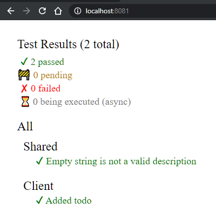

How do I test the client?
Testing on the client is a little different than on the server.
This is because the code which is ultimately being executed in the browser is Javascript, translated from F# by Fable, and so it must be tested in a Javascript environment.
Furthermore, code that is shared between the Client and Server must be tested in both a dotnet environment and a Javascript environment.
The SAFE template uses a library called Fable.Mocha which allows us to run the same tests in both environments. It mirrors the Expecto API and works in much the same way.
I'm using the standard template
If you are using the standard template then there is nothing more you need to do in order to start testing your Client.
In the tests/Client folder, there is a project named Client.Tests with a single script demonstrating how to use Mocha to test the TODO sample.
Note the compiler directive here which makes sure that the Shared tests are only included when executing in a Javascript (Fable) context. They are covered by Expecto under dotnet as you can see in Server.Tests.fs.
1. Launch the test server
In order to run the tests, instead of starting your application using
dotnet run
dotnet run Runtests
2. View the results
Once the build is complete and the website is running, navigate to http://localhost:8081/ in a web browser. You should see a test results page that looks like this:

This command builds and runs the Server test project too. If you want to run the Client tests alone, you can simply launch the test server using
npm run test:live, which executes a command stored inpackage.json.
I'm using the minimal template
If you are using the minimal template, you will need to first configure a test project as none are included.
1. Add a test project
In the tests/Client folder, create a create a .Net library called Client.Tests.
dotnet new ClassLib -lang F# -n Client.Tests -o tests/Client
dotnet sln add tests/Client
2. Reference the Client project
Reference the Client project from the Client.Tests project:
dotnet add src/Client.Tests reference src/Client
3. Add the Fable.Mocha package to Test project
Run the following command:
dotnet add tests/Client package Fable.Mocha
4. Add something to test
Add this function to Client.fs in the Client project
let sayHello name = $"Hello {name}"
5. Add a test
Replace the contents of tests/Client/Library.fs with the following code:
module Tests
open Fable.Mocha
let client = testList "Client" [
testCase "Hello received" <| fun _ ->
let hello = Client.sayHello "SAFE V3"
Expect.equal hello "Hello SAFE V3" "Unexpected greeting"
]
let all =
testList "All"
[
client
]
[<EntryPoint>]
let main _ = Mocha.runTests all
6. Add Test web page
Add a file called index.html to the tests/Client folder with following contents:
<!DOCTYPE html>
<html>
<head>
<title>SAFE Client Tests</title>
</head>
<body>
</body>
</html>
7. Add test webpack config
Add a file called webpack.tests.config.js to the root directory with the following contents:****
// Template for webpack.config.js in Fable projects
// Find latest version in https://github.com/fable-compiler/webpack-config-template
// In most cases, you'll only need to edit the CONFIG object (after dependencies)
// See below if you need better fine-tuning of Webpack options
// Dependencies. Also required: core-js, @babel/core,
// @babel/preset-env, babel-loader, sass, sass-loader, css-loader, style-loader, file-loader, resolve-url-loader
var path = require('path');
var webpack = require('webpack');
var HtmlWebpackPlugin = require('html-webpack-plugin');
var CopyWebpackPlugin = require('copy-webpack-plugin');
var CONFIG = {
// The tags to include the generated JS and CSS will be automatically injected in the HTML template
// See https://github.com/jantimon/html-webpack-plugin
indexHtmlTemplate: 'tests/Client/index.html',
fsharpEntry: 'tests/Client/Library.fs.js',
outputDir: 'tests/Client',
assetsDir: 'tests/Client',
devServerPort: 8081,
// When using webpack-dev-server, you may need to redirect some calls
// to a external API server. See https://webpack.js.org/configuration/dev-server/#devserver-proxy
devServerProxy: undefined,
babel: undefined
}
// If we're running the webpack-dev-server, assume we're in development mode
var isProduction = !process.argv.find(v => v.indexOf('webpack-dev-server') !== -1);
var environment = isProduction ? 'production' : 'development';
process.env.NODE_ENV = environment;
console.log('Bundling for ' + environment + '...');
// The HtmlWebpackPlugin allows us to use a template for the index.html page
// and automatically injects <script> or <link> tags for generated bundles.
var commonPlugins = [
new HtmlWebpackPlugin({
filename: 'index.html',
template: resolve(CONFIG.indexHtmlTemplate)
})
];
module.exports = {
// In development, split the JavaScript and CSS files in order to
// have a faster HMR support. In production bundle styles together
// with the code because the MiniCssExtractPlugin will extract the
// CSS in a separate files.
entry: {
app: resolve(CONFIG.fsharpEntry)
},
// Add a hash to the output file name in production
// to prevent browser caching if code changes
output: {
path: resolve(CONFIG.outputDir),
filename: isProduction ? '[name].[hash].js' : '[name].js'
},
mode: isProduction ? 'production' : 'development',
devtool: isProduction ? 'source-map' : 'eval-source-map',
optimization: {
splitChunks: {
chunks: 'all'
},
},
// Besides the HtmlPlugin, we use the following plugins:
// PRODUCTION
// - MiniCssExtractPlugin: Extracts CSS from bundle to a different file
// To minify CSS, see https://github.com/webpack-contrib/mini-css-extract-plugin#minimizing-for-production
// - CopyWebpackPlugin: Copies static assets to output directory
// DEVELOPMENT
// - HotModuleReplacementPlugin: Enables hot reloading when code changes without refreshing
plugins: isProduction ?
commonPlugins.concat([
new CopyWebpackPlugin({ patterns: [{ from: resolve(CONFIG.assetsDir) }] }),
])
: commonPlugins.concat([
new webpack.HotModuleReplacementPlugin(),
]),
resolve: {
// See https://github.com/fable-compiler/Fable/issues/1490
symlinks: false
},
// Configuration for webpack-dev-server
devServer: {
publicPath: '/',
contentBase: resolve(CONFIG.assetsDir),
host: '0.0.0.0',
port: CONFIG.devServerPort,
proxy: CONFIG.devServerProxy,
hot: true,
inline: true
},
module: {
rules: [
]
}
};
function resolve(filePath) {
return path.isAbsolute(filePath) ? filePath : path.join(__dirname, filePath);
}
8. Install the client's dependencies
npm install
9. Launch the test website
dotnet fable watch src/Client --run webpack-dev-server --config webpack.tests.config
Once the build is complete and the website is running, navigate to http://localhost:8081/ in a web browser. You should see a test results page that looks like this: